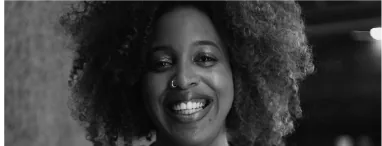
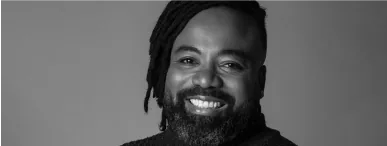
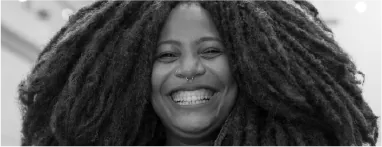

Cristiane Sobral
“Não vou mais lavar os pratos. Nem vou limpar a poeira dos móveis. Sinto muito. Comecei a ler”
Mulher negra, carioca que vive em Brasília. Mãe de Malick e Ayana. Com mais de três décadas dedicadas às artes cênicas e à literatura, construiu uma carreira multifacetada como atriz, professora, escritora e dramaturga. Escreveu 13 livros, com destaque para Não vou mais lavar os pratos (leitura obrigatória do vestibular UESB – BA e UnB), Pretos em contos - Vol. 2 (finalista do prêmio Jabuti 2022) e o mais recente, Como não ser racista. Como palestrante e oficineira, percorreu diferentes regiões do Brasil, o Continente Africano, a América Latina e a América do Norte (com destaque para a Harvard University). Ocupa a cadeira 34 da Academia de Letras do Brasil (DF) e figura entre as vozes fundamentais na luta poética contra o racismo.
Midiã Noelle

“A comunicação antirracista é um desafio de construção, desconstrução e reconstrução de sentidos que precisa ser contemplado por todas as pessoas, em todos os espaços”
Autora do livro Comunicação Antirracista – Um guia para se comunicar com todas as pessoas em todos os lugares, Midiã é jornalista, mestra em Cultura e Sociedade pela UFBA e fundadora do Instituto Commbne. Em sua trajetória profissional, trabalhou em agências das Nações Unidas, organizações dos movimentos negro e feminista negro e da administração pública. Atuou ainda como repórter e colunista do Jornal Correio, no qual foi apresentadora do programa de entrevistas Conexões Negras. Foi consultora e pesquisadora contratada pela Unesco para a redação do Plano de Comunicação pela Igualdade Racial do Governo Federal. Também ministra cursos sobre comunicação estratégica com foco na mobilização social e nas relações raciais.
Rodrigo França

“Protagonismo não é só gente preta na TV ou no teatro. Protagonismo é poder. Narrativa é poder. É poder quem escreve, quem dirige, quem ilumina, quem veste”
Rodrigo França é escritor, diretor de teatro, televisão e cinema, dramaturgo, roteirista e colunista do Metrópoles e Mundo Negro. É o primeiro diretor negro de streaming no Brasil – conteúdo original pela Netflix. Autor de obras como O pequeno príncipe preto, O menino e sua árvore, Confinamentos & afins e Pretagonistas, atua com narrativas antirracistas, afetivas e decoloniais. Dirigiu espetáculos que reconfiguram a presença negra nos palcos, como Se quiser falar de amor, Jorge pra sempre Verão e Migrantes. Seus projetos transitam entre literatura, teatro, audiovisual e educação. Comprometido com uma estética preta e política, constrói novas centralidades para pessoas negras.
Pâmela Carvalho

“O letramento racial é a porta que se abre para a educação antirracista, que é um processo de ação”
Educadora, historiadora, gestora cultural, pesquisadora ativista das relações raciais e de gênero e dos direitos de populações de favelas. Mestre em educação pela UFRJ. É também coordenadora do eixo Arte, Cultura, Memórias e Identidades, na Redes da Maré, e representa institucionalmente a organização na secretaria executiva do Fórum Permanente pela Igualdade Racial (FOPIR) e na Coalizão Negra por Direitos. É editora na Revista Amarello e na Fast Company. Fundou o Quilombo Etu, coletivo que trabalha a cultura popular a partir de uma perspectiva de educação antirracista. É coordenadora do Centro AfroCarioca de Cinema, responsável pelo Encontro de Cinema Negro Zózimo Bulbul. É Conselheira (Suplente) Estadual de Políticas Culturais do Rio de Janeiro e moradora do Parque União, no Conjunto de Favelas da Maré, Rio de Janeiro.
Cristiane Sobral
“Não vou mais lavar os pratos. Nem vou limpar a poeira dos móveis. Sinto muito. Comecei a ler”
Mulher negra, carioca que vive em Brasília. Mãe de Malick e Ayana. Com mais de três décadas dedicadas às artes cênicas e à literatura, construiu uma carreira multifacetada como atriz, professora, escritora e dramaturga. Escreveu 13 livros, com destaque para Não vou mais lavar os pratos (leitura obrigatória do vestibular UESB – BA e UnB), Pretos em contos - Vol. 2 (finalista do prêmio Jabuti 2022) e o mais recente, Como não ser racista. Como palestrante e oficineira, percorreu diferentes regiões do Brasil, o Continente Africano, a América Latina e a América do Norte (com destaque para a Harvard University). Ocupa a cadeira 34 da Academia de Letras do Brasil (DF) e figura entre as vozes fundamentais na luta poética contra o racismo.
15h — 15h15
TALK
CONSCIÊNCIA E RESISTÊNCIA
Com Midiã Noelle e Rodrigo França | Mediação: Pâmela Carvalho
Midiã Noelle
“A comunicação antirracista é um desafio de construção, desconstrução e reconstrução de sentidos que precisa ser contemplado por todas as pessoas, em todos os espaços”
Autora do livro Comunicação Antirracista – Um guia para se comunicar com todas as pessoas em todos os lugares, Midiã é jornalista, mestra em Cultura e Sociedade pela UFBA e fundadora do Instituto Commbne. Em sua trajetória profissional, trabalhou em agências das Nações Unidas, organizações dos movimentos negro e feminista negro e da administração pública. Atuou ainda como repórter e colunista do Jornal Correio, no qual foi apresentadora do programa de entrevistas Conexões Negras. Foi consultora e pesquisadora contratada pela Unesco para a redação do Plano de Comunicação pela Igualdade Racial do Governo Federal. Também ministra cursos sobre comunicação estratégica com foco na mobilização social e nas relações raciais.
Rodrigo França
“Protagonismo não é só gente preta na TV ou no teatro. Protagonismo é poder. Narrativa é poder. É poder quem escreve, quem dirige, quem ilumina, quem veste”
Rodrigo França é escritor, diretor de teatro, televisão e cinema, dramaturgo, roteirista e colunista do Metrópoles e Mundo Negro. É o primeiro diretor negro de streaming no Brasil – conteúdo original pela Netflix. Autor de obras como O pequeno príncipe preto, O menino e sua árvore, Confinamentos & afins e Pretagonistas, atua com narrativas antirracistas, afetivas e decoloniais. Dirigiu espetáculos que reconfiguram a presença negra nos palcos, como Se quiser falar de amor, Jorge pra sempre Verão e Migrantes. Seus projetos transitam entre literatura, teatro, audiovisual e educação. Comprometido com uma estética preta e política, constrói novas centralidades para pessoas negras.
Pâmela Carvalho
“O letramento racial é a porta que se abre para a educação antirracista, que é um processo de ação”
Educadora, historiadora, gestora cultural, pesquisadora ativista das relações raciais e de gênero e dos direitos de populações de favelas. Mestre em educação pela UFRJ. É também coordenadora do eixo Arte, Cultura, Memórias e Identidades, na Redes da Maré, e representa institucionalmente a organização na secretaria executiva do Fórum Permanente pela Igualdade Racial (FOPIR) e na Coalizão Negra por Direitos. É editora na Revista Amarello e na Fast Company. Fundou o Quilombo Etu, coletivo que trabalha a cultura popular a partir de uma perspectiva de educação antirracista. É coordenadora do Centro AfroCarioca de Cinema, responsável pelo Encontro de Cinema Negro Zózimo Bulbul. É Conselheira (Suplente) Estadual de Políticas Culturais do Rio de Janeiro e moradora do Parque União, no Conjunto de Favelas da Maré, Rio de Janeiro.